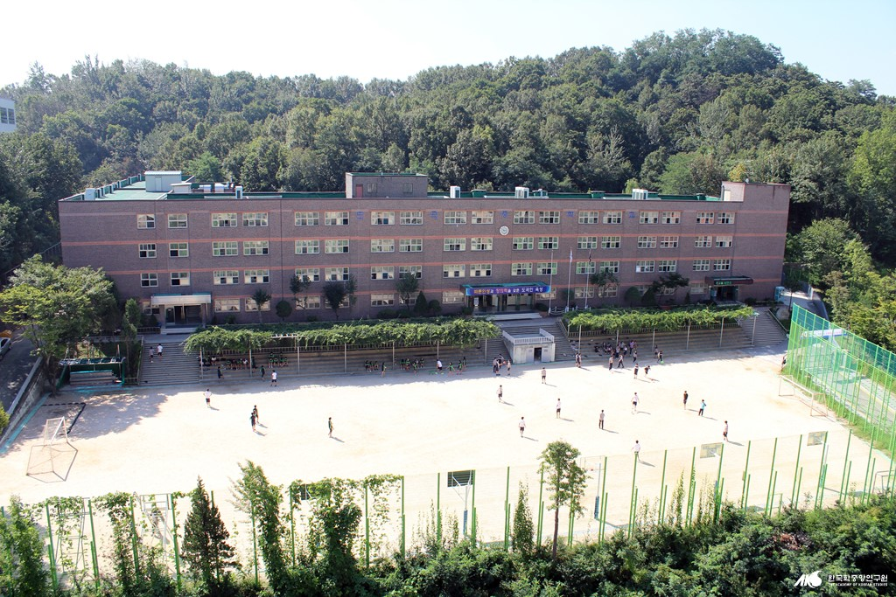
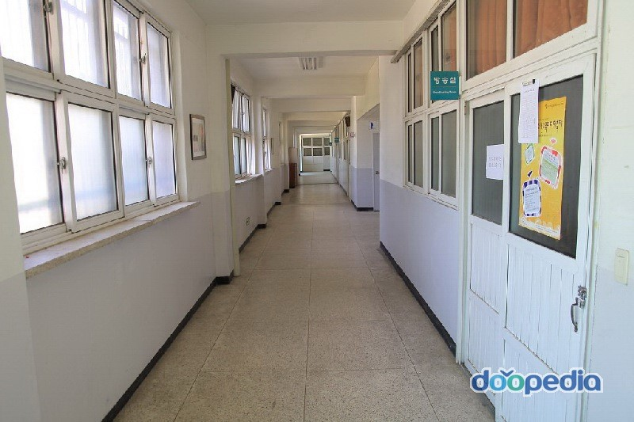
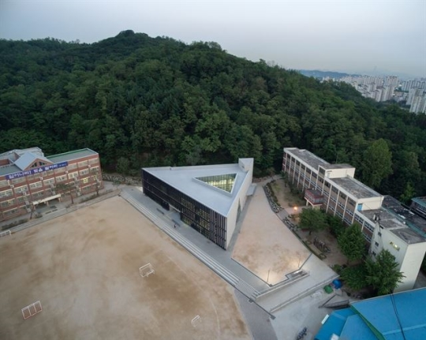
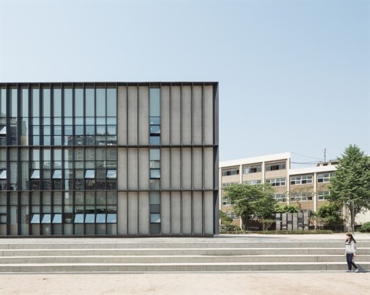
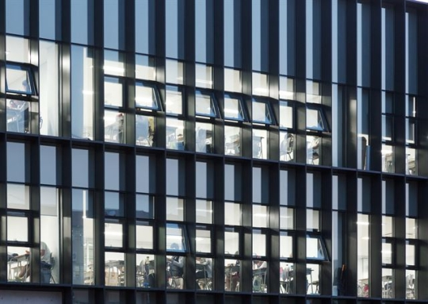
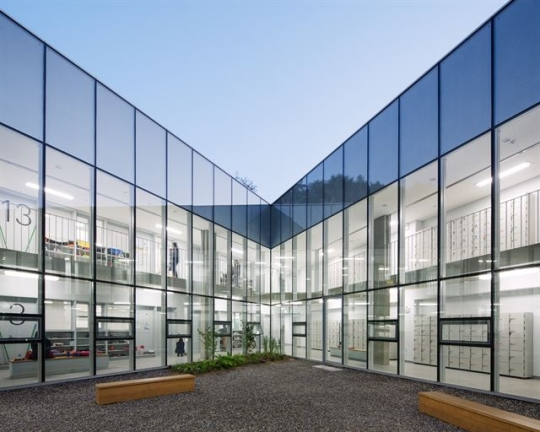
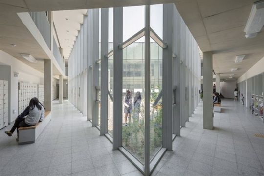
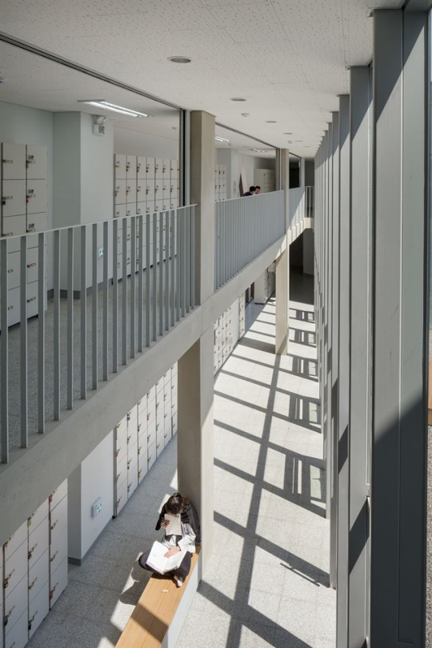

경기도 남양주시 도농동에 위치한 동화중고등학교. 노후한 학습동을 철거하고 운동장이었던 자리에 삼각형의 새 건물이 들어섰다.

동화고 삼각학교 전면. 교실 있는 쪽 전면이 유리로 돼 있어 안이 훤히 들여다 보인다.

밤에 불을 켠 모습. 공부하는 학생들이 운동장으로 시선을 돌릴까 봐 설계 당시 교사들의 우려가 컸다고 한다.

삼각학교 내부에 마련된 야외 중정. 쉬는 시간에 학생들이 나와 배드민턴을 치거나 이야기를 나눈다.

2층과 3층을 가로지르는 투명한 야외 중정은 건물을 사방팔방으로 연결시킨다.

건물의 삼각형과 중정의 삼각형을 살짝 틀어 2층과 3층 사이의 틈을 만들었다. 이곳을 통해 윗층과 아래층이 수직으로 연결된다.